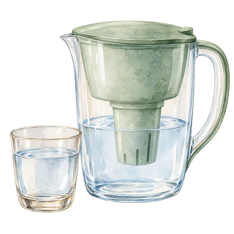
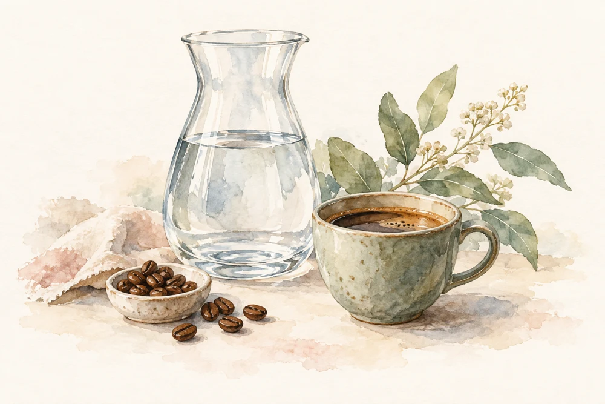
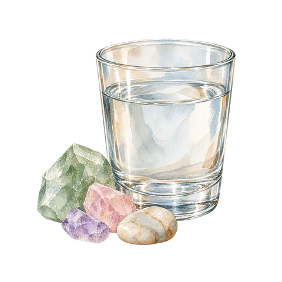
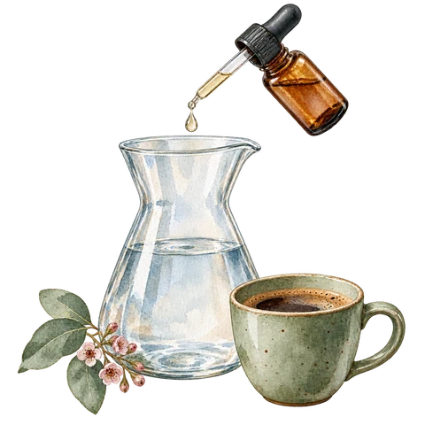
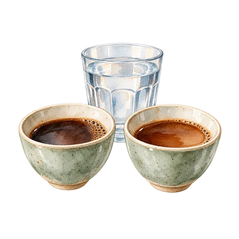
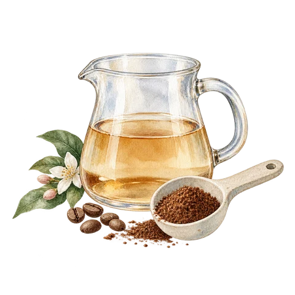
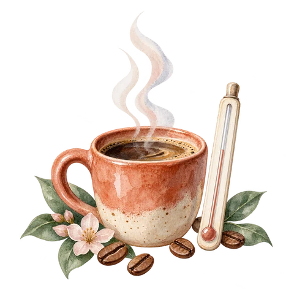
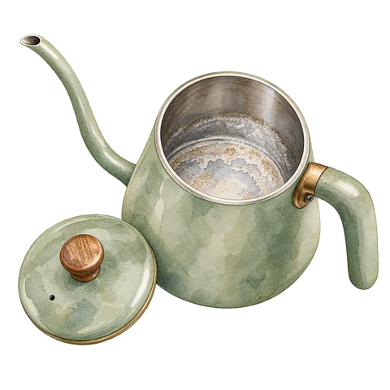

Start with filtered drinking water.
Chlorine, odor, and old filters can flatten good coffee. If tap water smells like chlorine, tastes salty, or leaves heavy scale, filter it or use bottled water with a clean taste.
Water for your coffee
Start with clean-tasting water. Discover what makes your cup shine.


Chlorine, odor, and old filters can flatten good coffee. If tap water smells like chlorine, tastes salty, or leaves heavy scale, filter it or use bottled water with a clean taste.

Calcium and magnesium contribute to hardness and affect extraction and body. Too little mineral can taste thin; too much hardness can mute clarity. Alkalinity buffers acidity, and too much can make it dull.

Use magnesium-forward water for brighter filter coffee, balanced calcium-magnesium water for body, and controlled alkalinity for acidity.
Troubleshooting

Flat and dull
Sharp but weak
Dry and harsh
Scale in kettleOpen an issue to explore its possible cause and first adjustment. Change one variable at a time and compare with the same recipe.